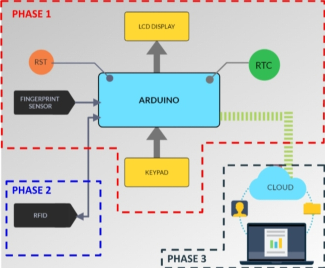
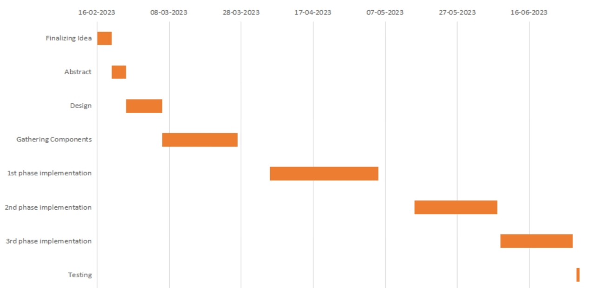

ATTENDANCE
MANAGEMENT
SYSTEM
ABSTRACT
- Taking attendance manually is generally time consuming and cumbersome.
- Since this invokes the possibility of errors, there is need for a better data management system that is always quick and accurate.
- In this project we have designed an RFID & Fingerprint based Attendance System using Arduino, RFID MFRC522 Module and R307 fingerprint module.
- This application takes attendance electronically and the records of the attendance are stored in a database to which only the teacher has direct access.
- Students can mark their attendance using fingerprint. Teachers are issued an RFID card for admin access.
BLOCK DIAGRAM

COMPONENTS USED
- ARDUINO UNO
- 4 X 4 MATRIX MEMBRANE KEYPAD
- 16 X 2 LCD DISPLAY
- R307 FINGERPRINT SENSOR MODULE
- MF RC522 RFID MODULE
- DS3231 RTC MODULE
- DOT / VEROBOARD
- TOGGLE SWITCH
RESULT
PHASE 1 implemented.
PHASE 2 partially implemented.
Few constraints noted and working on the rectification.
Function to add and delete fingerprint data created.
Started designing 3D case for the prototype using fusion 360.
GANTT CHART
